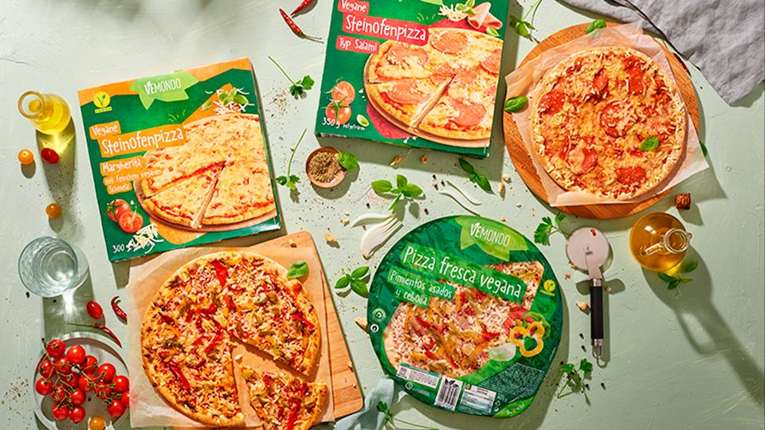

¿Sabías que disminuir la venta de productos cárnicos puede ayudar a nuestro planeta? La cadena de supermercados alemana Lidl tomó esta iniciativa para aportar con su empresa a un mundo más sustentable. La propuesta es reemplazar los productos de origen animal por aquellos de origen vegetal. Esta decisión no pretende educar sobre cómo debemos comer, sino poner a la oferta una alternativa más saludable para nuestro planeta.
Sabemos que la industria cárnica es responsable de enormes toneladas de dióxido de carbono, y el gasto de valiosos recursos. La alimentación a base de plantas surge como alternativa ética y responsable no solo con los animales, sino también con el planeta, y con el futuro de todos los habitantes. La comida no es infinita, y si queremos poder alimentar a todas las próximas generaciones, es hora de hacer un cambio.
Hoy en día, los productos veganos siempre son la minoría, más caros y más difíciles de conseguir. La iniciativa de Lidl es priorizarlos para ofrecer opciones reales a los consumidores e incentivar a un consumo más consciente en nuestra alimentación y estilo de vida.
Un nuevo paradigma está surgiendo, somos nosotrxs como consumidores quienes tenemos el poder de la elección. No hay un segundo planeta, pero sí un cambio de paradigma, en donde podemos empezar a mirar las cosas de otro modo. La venta de productos veganos puede reducir el impacto ambiental. Lidl ya lo sabe y propone, como supermercado, ofrecer una opción diferente.